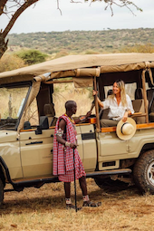

A PLACE TO BE
Musembi Earthways was founded on the principle that travel should protect the wild, not just witness it. We partner with local conservancies to ensure every footprint is a positive one.
IN LOVE WITH IMPACT
For the Solo Impact Traveler, we provide exclusive eco-friendly impact reports. Every journey tracks your personal contribution to reforestation and anti-poaching units across East Africa.